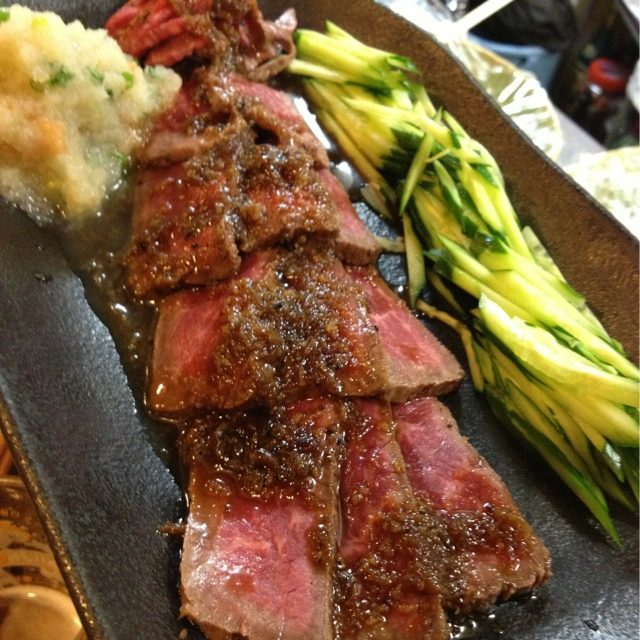
RECOMMEND 01
牛のたたき
200g ￥3,300 ／ 100g ￥1,650（税込）
表面を炙り、中は赤身を残して薄く引いた一皿です。きゅうりの千切りと薬味を添えて、さっぱりとお召し上がりいただけます。100gからご用意しておりますので、まずはこの一皿から。
本日の営業時間を確認中…
風がやみ、波がしずまる。
そんな静けさを、肴と酒で。
「凪（なぎ）」とは、風が止み波がおだやかになるひとときを指す言葉。古河駅から歩いてほど近いこの店で、慌ただしい一日の終わりに、静かに肩の力を抜いていただければと願っています。名物の牛のたたきやジャンボ厚焼玉子はもちろん、手造りのピザ・パスタ、〆のおにぎりやお茶漬けまで。肩肘張らずに、長く居られる一軒です。
数ある品書きの中でも、特にお客様からご好評をいただいているものをご紹介いたします。

200g ￥3,300 ／ 100g ￥1,650（税込）
表面を炙り、中は赤身を残して薄く引いた一皿です。きゅうりの千切りと薬味を添えて、さっぱりとお召し上がりいただけます。100gからご用意しておりますので、まずはこの一皿から。
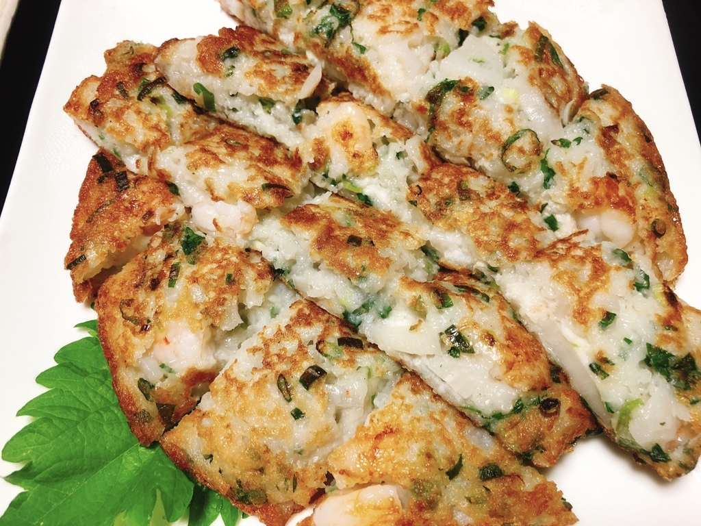
￥990（ハーフ ￥605）（税込）
刻みねぎをたっぷり練り込み、厚く焼き上げた一枚。大葉を敷いて切り分けてお出しします。ハーフサイズもご用意していますので、お一人でも、シェアでも。
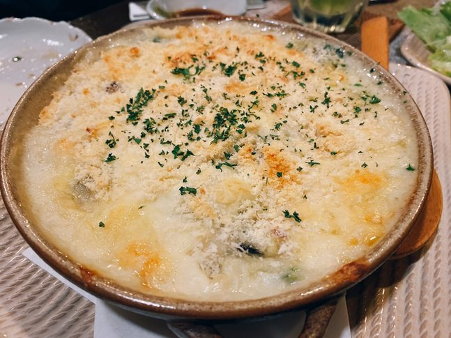
パスタ 各￥1,430 ／ ピザ ￥1,320〜 ／ グラタン ￥1,210〜（税込）
居酒屋でありながら、パスタとピザは手造り。土鍋で焼き上げるグラタンも、〆やお子様連れのお席でよくご注文をいただきます。
お客様が撮ってくださった、実際のお料理です。
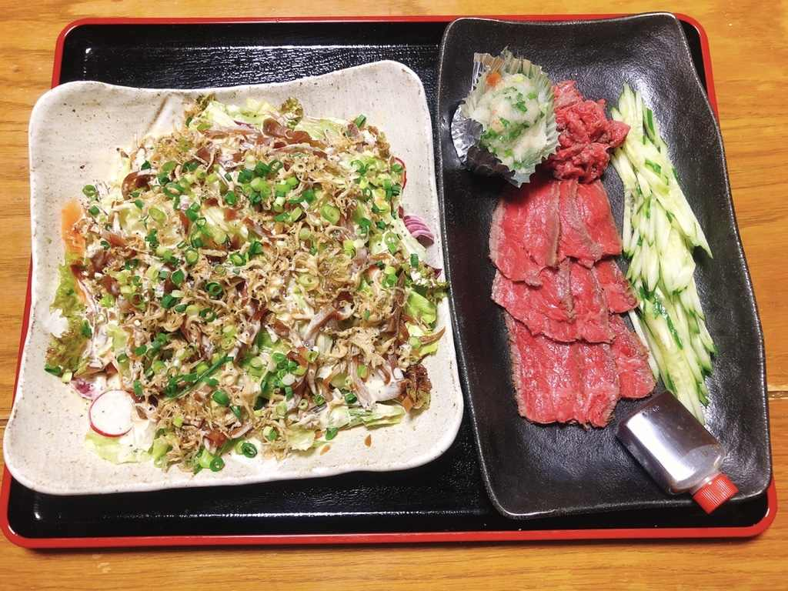
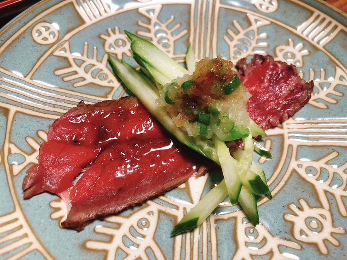
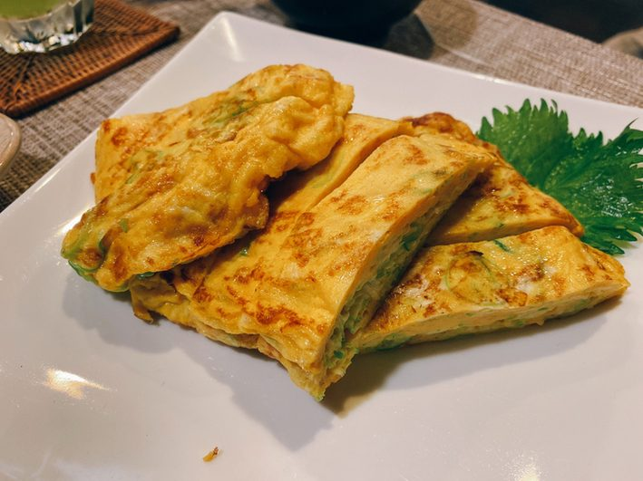
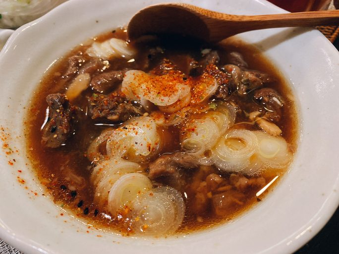
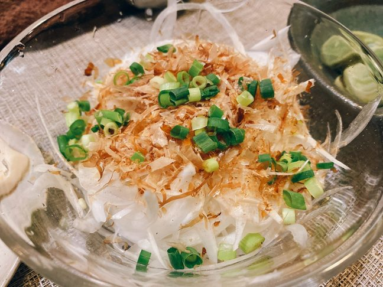
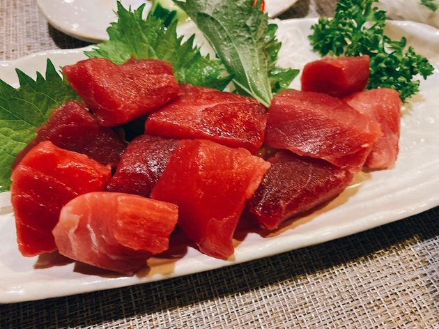
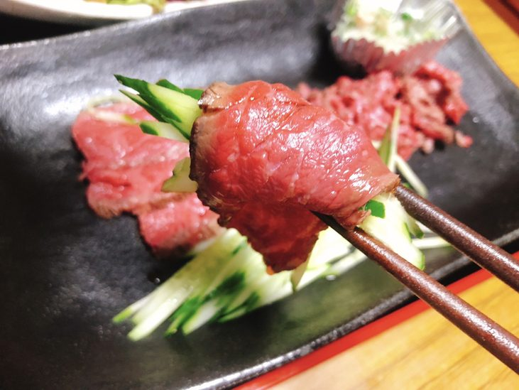
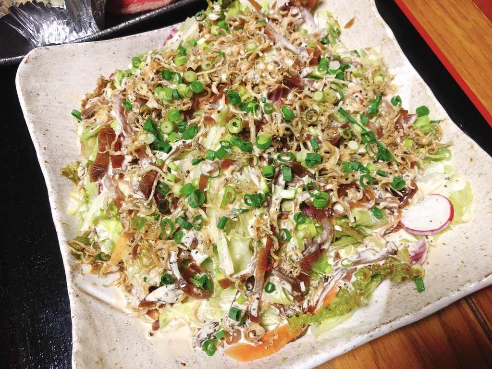
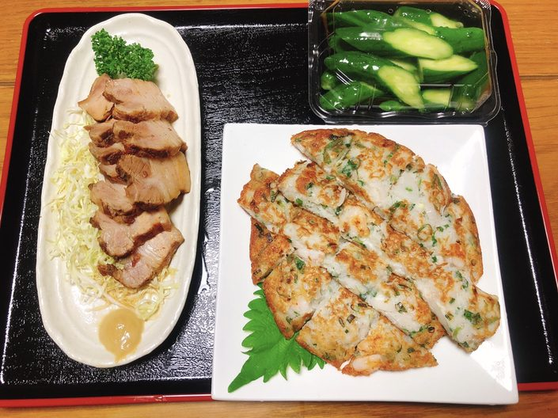
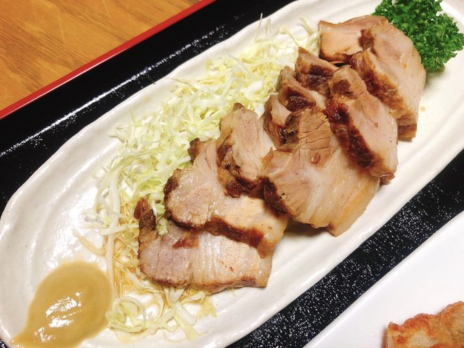
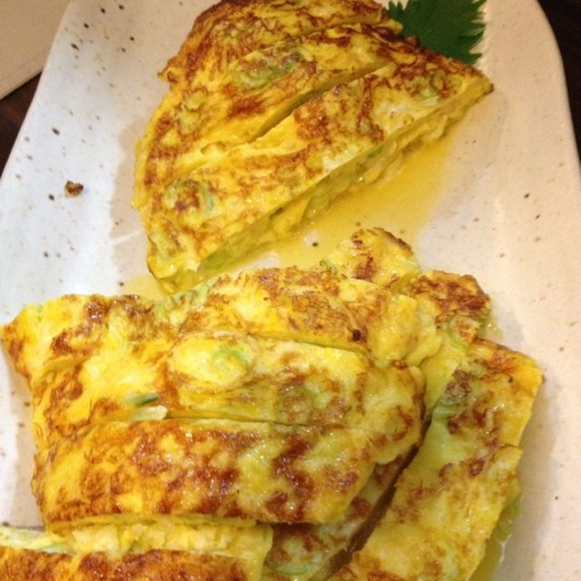
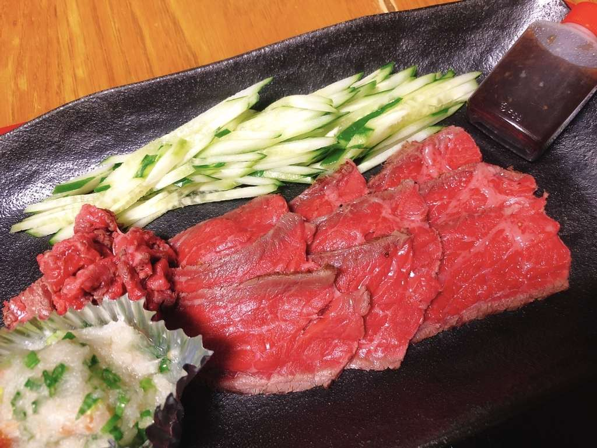
※お飲み物の価格は改定中のため、店頭にてご確認ください。ビール・焼酎・日本酒などもご用意しております。
※仕入れ状況により銘柄が変更となる場合がございます。お車でお越しの方への酒類のご提供はできません。
お店の味をご家庭で。受付は 15:30〜21:00 です。
※テイクアウトの価格は店内の価格と異なります。改定されている場合がございますので、お電話でご確認ください。
※営業状況によってお時間をいただく場合がございます。お電話の際にご確認ください。
※記載以外のメニューもご用意できます。
お一人でも、お仲間とでも。その日の気分に合わせてお選びください。
お一人様も大歓迎。店主との会話を楽しみながら、静かに一献傾けられる特等席です。仕事帰りにふらりとどうぞ。
ご友人やご家族との食事にちょうどよいテーブル席。気の置けない仲間同士、ゆっくりと語らいながらお過ごしください。
歓送迎会や打ち上げなどのご宴会も承ります。人数・ご予算はお気軽にご相談ください。駐車場もございます。
| 店名 | 居酒屋 凪 |
|---|---|
| 所在地 | 茨城県古河市北町1-3 |
| 電話番号 | 0280-32-7041 ご予約・お問い合わせはお電話にて |
| アクセス | JR古河駅から徒歩約10分 |
| 営業時間（月〜金） | 17:00〜22:30（L.O. 22:00） |
| 営業時間（土） | 17:30〜23:00（L.O. 22:30） |
| 定休日 | 日曜日 |
| 駐車場 | あり（お車でお越しの方への酒類のご提供はできません） |
| お支払い | 現金 |